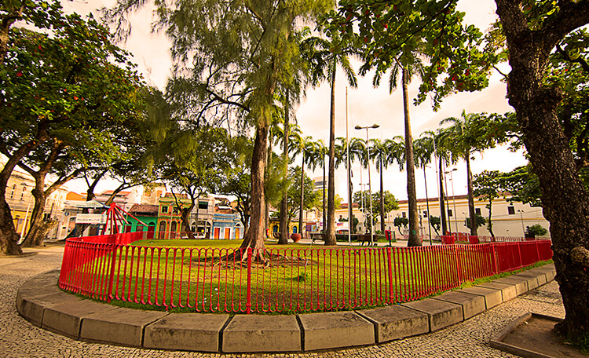

Praça do Arsenal
A praça foi projetada pelo paisagista Roberto Burle Marx e é composta por várias Palmeiras Imperiais, além de contar, com uma bela fonte. No entorno é possível observar na região norte a Capitania dos Portos, do lado leste a Torre Malakof (Construída no século XIX para servir como observatório astronômico), ao sul é possível observar o Paço do Frevo (Um dos principais museus da cidade do Recife, que faz alusão ao frevo), na Zona Oeste, da praça, encontra-se a Central de Atendimento ao Turista e a Embaixada Pernambucana (Museu de bonecos de cera).
Imagem da Praça Arsenal
Embaixada dos Bonecos Gigantes
Os Bonecos Gigantes surgem na Europa, provavelmente na Idade Média, sob a influência dos mitos pagãos escondidos pelos temores da Inquisição. Chegam em Pernambuco através da pequena cidade de Belém do São Francisco no sertão do estado. Os bonecos surgiram da vontade de um jovem sonhador que ouvia atento as narrativas de um padre belga sobre o uso de bonecos nas festas religiosas da Europa. O primeiro boneco foi às ruas da pequena cidade durante o carnaval de 1919 com o surgimento do personagem Zé Pereira, confeccionado em corpo de madeira e cabeça em papel machê, somente no ano de 1929 resolveram criar sua companheira, boneca esta batizada com o nome de Vitalina.
A tradição dos bonecos gigantes, iniciada em Belém do São Francisco, ganhou as ladeiras de Olinda em 1932, com a criação do boneco do Homem da Meia Noite, confeccionado pelas mãos dos artistas plásticos Anacleto e Bernardino da Silva, em 1937 surgiu a Mulher do Meio Dia, em 1974 foi à vez do Menino da Tarde pelas mãos do artista plástico Silvio Botelho Botelho, que popularizou a tradição com criação do Encontro dos Bonecos Gigantes, onde vários bonecos de diversos artistas se encontram para um grande desfile pelo sitio histórico de Olinda na terça de carnaval.
Em 2008, o empresário e produtor cultural Leandro Castro criou uma nova geração dos Bonecos Gigantes. Uma equipe montada com diversos artistas como: Antônio Bernardo, Aluísio de Nazaré da Mata e a estilista Sineide Castro, responsável pelos figurinos dos bonecos, materializaram grandes ícones da história e cultura brasileira e personalidades mundiais como: Mauricio de Nassau, D. Pedro I, Lampião, Michael Jackson, Luiz Gonzaga, Ariano Suassuna, Dominguinhos, Chacrinha, Alceu Valença, Chico Science, Elba Ramalho, Pelé, Jô Soares, Neymar, Os Beatles, Rita Lee, Roberto Carlos, David Bowie, Elvis Presley, ente outros.
A nova geração dos bonecos tem impressionado bastante a todos pelo grande realismo das expressões faciais e figurinos, o que originou o titulo de museu de cera popular itinerante. Este maior realismo foi obtido na inovação dos materiais utilizados, a matriz moldada em argila para posterior aplicação de fibra de vidro, material este mais leve e duradouro, as mãos dos bonecos permaneceram em isopor para não machucar nenhum folião durante as apresentações, a altura média dos bonecos é de 3,90m. Em 2009, foi realizado na segunda feira de carnaval, a primeira Apoteose dos Bonecos Gigantes no Sitio Histórico de Olinda com 30 bonecos, em 2016 o evento contou com mais de 80 bonecos revivendo grandes personalidades da cultura e historia pernambucana, brasileira e mundial. Atualmente os bonecos permanecem em exposição o ano inteiro na Embaixada de Pernambuco - Bonecos Gigantes de Olinda, localizada na Rua do Bom Jesus, 183 no Recife Antigo.